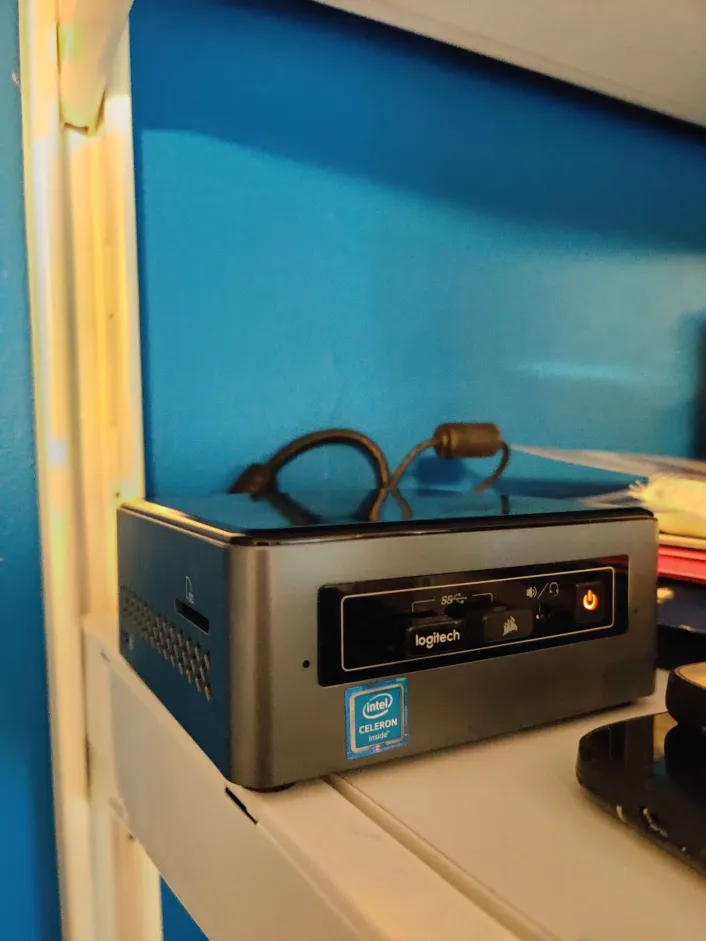
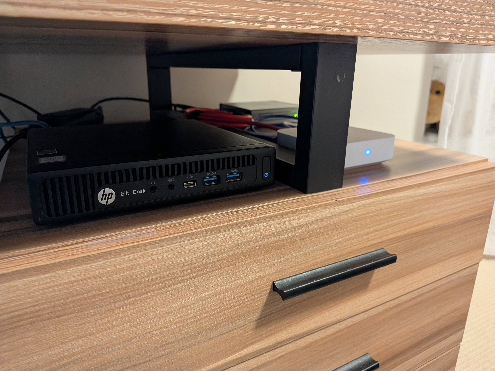
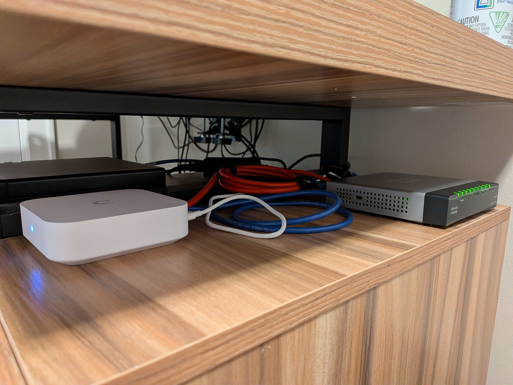

My homelab is probably my biggest and most time consuming project. FOr the last 5 years or so I have been working with enterprise software and tech to gain knowledge and understanding of the IT world. Over the years I have run many different application, primarily though it is a Windows based labe iwth Active Directory, and a buch of Windows Server VM's, all powered by Hyper-V (I used ESXI for a bit but ended up back on Hyper-V). My most recent project has been in the VoIP world which I have taken quite and interest to, running my own PBX and learning about all the ins and outs for realtime audio communication over the internet. Below is a list of all the services currently running between my two hosts
Over the year I have played with other tech like: